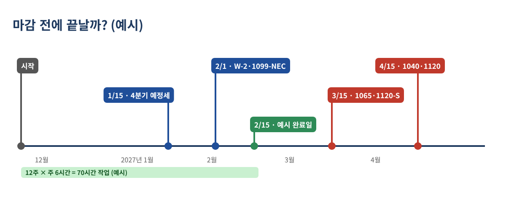
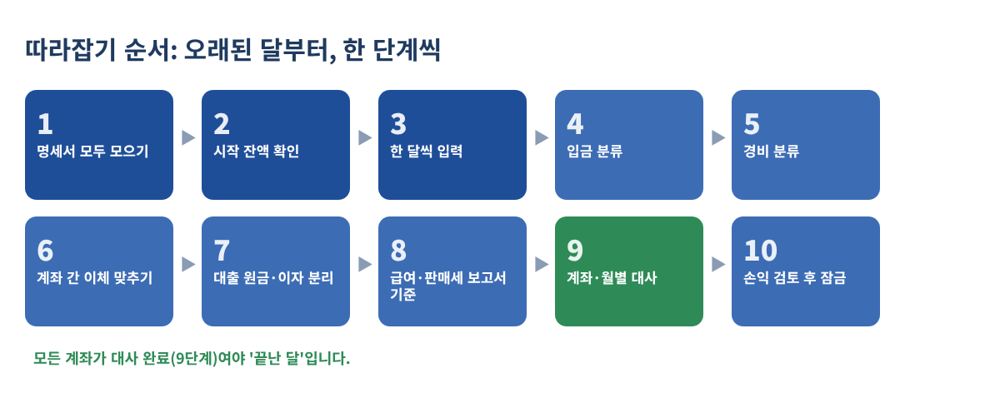
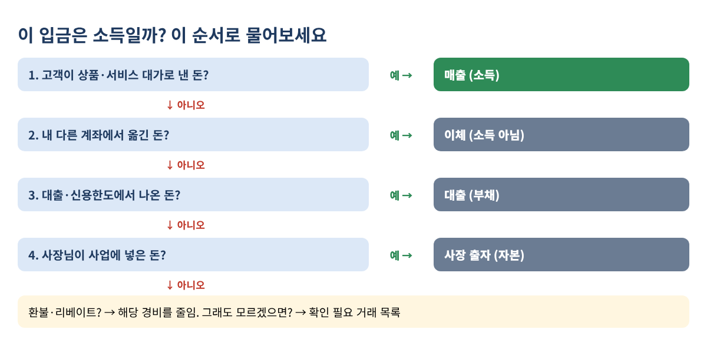
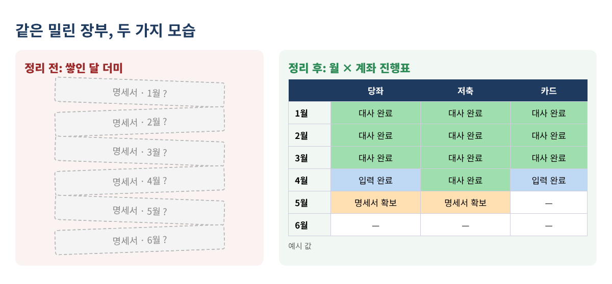

가게가 바빴던 시즌, 직원 교체, 집안일… 이유는 달라도 정신을 차려 보면 봄 이후로 장부를 한 번도 못 열었다는 사장님이 많습니다. 은행 명세서는 쌓이고 영수증은 봉투째 있고, 1099·W-2·세금 신고 마감은 매주 가까워집니다.
다행히 밀린 장부는 크기를 잴 수 있는 일입니다. 먼저 양을 재고 올바른 순서로 하면, 11월 지금 시점에 "마감 전에 끝낼 수 있는지"를 숫자로 알 수 있습니다. 엑셀이나 구글 시트에 그대로 입력할 수 있는 수식과 함께 방법을 정리했습니다.
이런 분께: 장부를 직접 하시거나, 세무 담당자에게 넘기기 전에 정리해 두려는 사장님·실장님 중 한 달 이상 밀린 분
대부분 가장 오래된 명세서를 열고 바로 입력부터 시작합니다. 일하는 느낌은 나지만 정작 중요한 질문, "마감 전에 끝나나?"에는 답하지 못합니다. 숫자 4개로 먼저 답을 내세요.
여기에 조정 가능한 가정 세 가지를 씁니다. 거래 1건 입력·분류에 약 1.5분, 계좌 하나·한 달 대사(잔액 맞추기)에 약 20분, 서류 모으기·최종 검토에 4시간 정도. 영수증을 일일이 찾아야 하면 분을 늘리세요.
작은 시트에 입력값을 넣습니다. 아래 예에서는 B1~B10이 입력, 수식은 D열에 넣습니다.
| 셀 | 입력 | 예시 (가상) |
|---|---|---|
| B1 | 정리 안 된 첫 달 | 2026-01-01 |
| B2 | 마칠 마지막 달 | 2026-12-01 |
| B3 | 계좌 수 | 3 |
| B4 | 월 거래 건수 | 180 |
| B5 | 주당 시간 | 6 |
| B6 | 건당 분 | 1.5 |
| B7 | 계좌·월별 대사 분 | 20 |
| B8 | 준비·검토 시간 | 4 |
| B9 | 작업 시작일 | 2026-11-23 |
| B10 | 목표일 | 2027-03-15 |
이제 수식을 입력합니다.
=(YEAR(B2)-YEAR(B1))*12+MONTH(B2)-MONTH(B1)+1 → 12=D1*B4*B6/60 + D1*B3*B7/60 + B8 → 54 + 12 + 4 = 70=ROUNDUP(D2/B5,0) → 12=B9+D3*7 → 2027-02-15 (셀 서식을 날짜로)=B10-D4 → 28=D2/((B10-B9)/7) → 4.4이 예시라면 3월 15일 목표보다 4주쯤 일찍 끝납니다. 결과가 마이너스라면 3월이 아니라 11월 지금, 시간을 늘릴지·목표를 옮길지·범위를 줄일지 결정할 수 있습니다.



세로에 달, 가로에 계좌를 둔 표를 만들고 칸마다 상태를 하나씩 적습니다: Statement in(명세서 확보), Entered(입력 완료), Reconciled(대사 완료). 그 줄의 모든 계좌가 Reconciled여야 '끝난 달'입니다. 모든 칸에 상태를 적었다면 전체 진행률은 =COUNTIF(B2:D13,"Reconciled")/COUNTA(B2:D13) 로 볼 수 있습니다.

작업하면서 목록 두 개를 같이 쓰세요. 없는 서류(무엇, 어느 달, 요청한 날짜)와 확인 필요 거래(날짜, 금액, 내용, 추정). 정체 모를 거래 하나 때문에 한 달 전체를 멈추지 말고, 적어 두고 다음으로 넘어가세요.
| A · 1인 서비스업 | B · 바쁜 식당 | C · 온라인 쇼핑몰 | |
|---|---|---|---|
| 밀린 시점 | 2026년 9월 (4개월) | 2026년 1월 (12개월) | 2025년 7월 (18개월) |
| 계좌 수 / 월 거래 | 2 / 60 | 4 / 450 | 3 / 220 |
| 주당 시간 | 3 | 8 | 5 |
| 총 시간 | 12.7 | 155 | 121 |
| 완료일 (11/23 시작) | 2026-12-28 | 2027-04-12 | 2027-05-17 |
| 목표 | 2027-02-01 | 2027-03-15 | 2027-04-15 |
| 결과 | 35일 여유 | 28일 지연 → 주 9.7시간 필요 | 32일 지연 → 주 5.9시간 필요 |
모든 값은 가상 예시입니다. 식당이 가장 흔한 '깜짝' 사례입니다. 월 450건이면 1년에 5,400건입니다. 11월에 155시간이라는 숫자를 보면 3월 마감을 맞출 방법이 보입니다. 온라인 쇼핑몰은 2025년도 밀려 있으니 2025년부터 끝내야 합니다. 그 마감은 이미 지났기 때문입니다.
| 날짜 | 마감 내용 |
|---|---|
| 2027-01-15 (금) | 2026년 4분기 예정세 납부 (Form 1040-ES) |
| 2027-02-01 (월) | W-2·Form 1099-NEC 발급·제출 (1월 31일이 일요일) |
| 2027-03-15 (월) | 파트너십(Form 1065)·S코퍼레이션(Form 1120-S) 신고 |
| 2027-04-15 (목) | 개인(Form 1040)·C코퍼레이션(Form 1120) 신고 |
| 2027-09-15 / 10-15 | 연장한 사업체 / 개인 신고 |
연장은 신고 기한만 늘려 주며, 낼 세금의 납부 기한은 그대로입니다. 2026년 지급분부터 Form 1099-NEC/1099-MISC 보고 기준이 대부분 $2,000으로 올라, 1월 초까지 외주 지급 합계가 필요합니다. 주(州) 마감일은 다를 수 있습니다.
위 수식으로 계산하세요. 대략 거래 1건당 1.5분, 계좌·월마다 20분입니다. 월 180건·계좌 3개인 사업체라면 1년치에 약 70시간입니다.
오래된 달부터입니다. 한 달의 기말 잔액이 다음 달의 시작 잔액이기 때문입니다.
온라인 뱅킹에서 받거나 은행에 다시 보내 달라고 요청하세요. 그동안 거래 내역으로 입력은 하되, 명세서를 받기 전에는 대사 완료로 표시하지 마세요.
연장은 신고 날짜만 늦춰 줍니다. 낼 세금은 원래 날짜까지 내야 하므로 이익을 어느 정도 추정할 수 있는 장부가 여전히 필요합니다.
이 글은 교육용 정보이며 세무·법률·회계 자문이 아닙니다. 시간 계산은 계획용 추정치이며 결과를 보장하지 않습니다. 규정과 날짜는 바뀔 수 있으니 IRS와 주 정부 안내를 확인하세요.
위 과정을 그대로 해 주는 밀린 장부 따라잡기 플래너 2026은 아래 무료 키트 다운로드에서 가입 없이 무료로 받으실 수 있습니다(엑셀 + PDF 가이드).